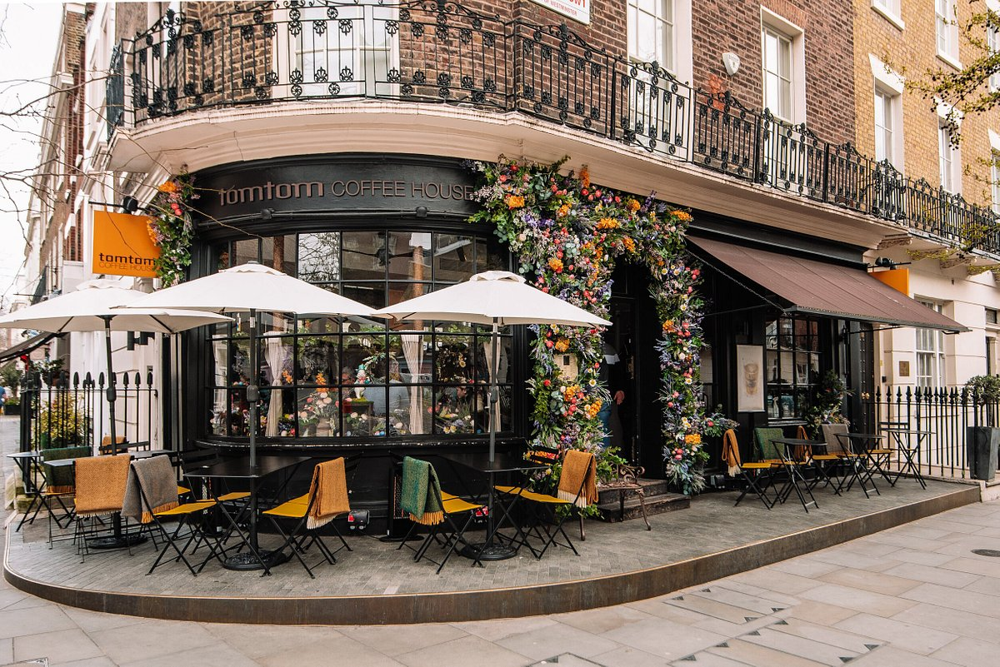

Monday 25 Novemeber 2024
There are many lovely cafes scattered all throughout London, but the real challenge comes in choosing which one to go to. Aside from the usual types of coffee and tea, some specicialize in sandwhiches and other savory items, while others are well known for their cakes and other sweet desserts. Still not sure which one you should visit? We've comprised a list of some of the best cafes throughout London to help narrow your decision.
Ron's Coffee House, which is located in Holdron's Cafe, is a lovely vegan cafe. All of the food items on the menu are completely plant-based, and the coffee is rich in flavor. Ron's also holds a variety of events such as hosting local DJs and giving them the opportunity to showcase their talents, live music sessions, tarot readings, and private parties.
Located in the heart of London, Caffe Concerto is known for its excellent customer service and delicious menu items. In addition to an assortment of different coffee types, Caffe Concerto is known for its exquisite Italian cuisine and special desserts. The cafe also makes specialized cakes for a variety of different events such as weddings, birthdays, and corportate occasions. Customers can choose to enjoy their food in either the outdoor or indoor sitting areas.
In addition to the lovely food, Caffe Concerto hosts a number of live artists for customers to enjoy while they eat. Some of their most prominent reoccurring musicians include That Joanna Bradshaw, Elliot Porter, Jess the Pianist, and Jon Hickman.
The Ivy Cafe provides customers with a sophisticated dining experience with a wide range of popular British cusine alongside a varitey of vegeterian meal options. It's cozy and invitiing ambiance makes it the perfect location for casual lunches and dinners, and its outdoor patio allows for patrons to bask in the atmosphere during the summer months.
The cafe also hosts private dining events for those special events in people's lives. Whether it is a birtday party, a friendly get-together, or business meeting, the Ivy Cafe event planning staff is dedicated to making the occasion as memorable as possible for their guests.
The Riding House cafe is located in the London neighborhood of Fitzrovia. In addition to the coffee, it provides a full breakfast, brunch, lunch, and dinner menu that both tourists and the locals in the area thoroughly enjoy. Some highlight items include pancakes and eggs benedict off of the breakfast menu, grilled steak, burgers, and fish for lunch or dinner. Looking for vegeterian options? Don't worry, they've got that too! Riding House is very mindful of the dietary needs of all of their customers, as well as any allergies and intolerances they may have.
Aside from the food, what people enjoy most about Riding House is the atmosphere. The exposed seating style, open concrete walls, and influx of natural lighting helps foster a light and bubbly environment. This makes it the perfect spot for having lunch or dinner with a group of friends.